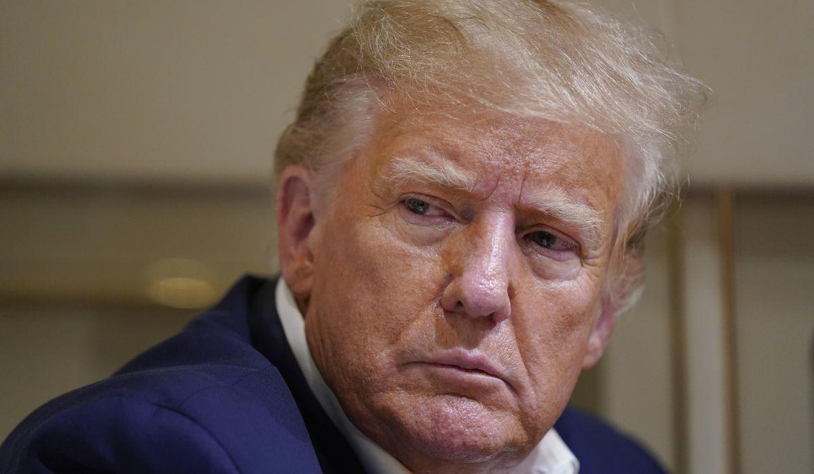

Trump says Bedminster audio was leaked to hurt 2024 bidDonald Trump is fuming as the political world reacts to an audio recording in which the former president seems to display secret Pentagon information about Iran in a 2021 meeting — an episode critical to special counsel Jack Smith’s case against him. The recording, obtained by CNN, depicts Mr. Trump saying, “These are the papers,” in a July 2021 interview the ex-president gave to people working on a book about former Chief of Staff Mark Meadows at his golf club in Bedminster, New Jersey. The quote is not in the indictment and seems to undercut Mr. Trump’s assertion in a recent Fox News interview that he wasn’t holding a sensitive document about military plans to attack Iran. “It may have been held up or may not, but that was not a document. I didn’t have a document, per se. There was nothing to declassify,” Mr. Trump told Fox News’ Bret Baier. “These were newspaper stories, magazine stories and articles.” In the 2021 interview, Mr. Trump was trying to make a point about news articles that said Army Gen. Mark Milley, the chairman of the Joints Chief of Staff, was worried Mr. Trump would order a wayward military operation in the waning days of his presidency. The ex-president was trying to show that the military had drafted those kinds of plans, not him. Mr. Trump sounded off on his social media platform, Truth Social, overnight Monday. He does not deny the authenticity of the tape but claims the recording doesn’t prove a crime and was leaked to damage his 2024 prospects. The Bedminster incident is one of two instances in a federal indictment claiming Mr. Trump displayed classified information in front of people without authorization to see it. Mr. Trump faces 37 counts alleging he improperly stored sensitive documents at his Mar-a-Lago estate in Florida and obstructed efforts to return them to the National Archives. Mr. Trump sounded off on his social media platform, Truth Social, claiming the tape doesn’t prove a crime and was leaked to damage his 2024 prospects. “The Deranged Special Prosecutor, Jack Smith, working in conjunction with the DOJ & FBI, illegally leaked and ’spun’ a tape and transcript of me which is actually an exoneration, rather than what they would have you believe,” Mr. Trump wrote. “This continuing Witch Hunt is another ELECTION INTERFERENCE Scam. They are cheaters and thugs!” The Trump campaign said Mr. Trump did nothing wrong and was in a lighthearted conversation that also touched on his 2016 opponent, Hillary Clinton. “The audio tape provides context proving, once again, that President Trump did nothing wrong at all,” Trump campaign spokesman Steven Cheung said. “The media and the Trump-haters once again were all too willing to take the bait, falling for another Democrat-DOJ hoax, hook, line and sinker.” One of Mr. Trump’s lesser-known GOP rivals, Steve Laffey, said the tape proves Mr. Trump is unfit for office. “To be so cavalier, bragging about the contents of the documents, confirms what we’ve already known: Donald Trump is a narcissist and is unfit for office,” said Mr. Laffey, a presidential candidate and former mayor of Cranston, Rhode Island. “He must end his campaign for President and let the adults take over from here.” Donald Trump is fuming as the political world reacts to an audio recording in which the former president seems to display secret Pentagon information about Iran in a 2021 meeting — an episode critical to special counsel Jack Smith’s case against him. Please read our comment policy before commenting. |
 |